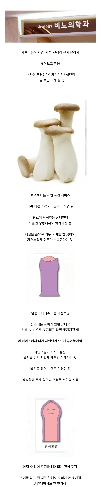

굳이비교하면 눈위아래 손으로 잡고 쫙 펼치면 살땡기는 그런느낌임 좀 강하게
비뇨기과 바이럴 또는 미개했던 시절 선풍기 틀고자면 죽는다급으로 병신짓이었지
자연포경이 80%정도 되는줄 알았는데
자연포경은 얼마 안되고 대부분 가성포경이라고 하는구나
나도 자연포경인데 이게 희귀한건가
자연이 생각보다 비율이 엄청 낮네
외국 야동에서 500ml몬스터 캔만한 야추가 덮혀있는거 본적 있는데
자연/가성은 야추 크기랑 상관없나봄
감돈같은 장애좆 아니면 가성도 포경수술 하지마 아들 낳아도 포경수술 시키지말고 나중에 성인돼서 본인 판단에 맡겨야지 어린나이부터 시키지마 멀쩡한 좆 장애 좆 만드는 개 병신 좆 미개 수술임 특히 나처럼 발기전후 차이 큰 사람들이 특히 하면 안되고 자위 할때도 포경 안한게 훨씬 편하고 기분도 좋음
난 진성이었는데 매일 샤워때마다 손가락으로 잡고 스트레칭하면서 늘려주길 반복하니까 가성으로 변함
약간 스타일리쉬하게 못하나?
대각선으로 비대칭주면 약간 시크한느낌도 있을거고
핑킹가위같은거로 하면 반항아같은 이미지도 줄수 있잖음
어차피 포경수술하면 성형중독남인데 이러나저러나 같잖음
역시 동성애자야 스타일리쉬해
스타일발언은 그냥 취소할래..
만약 목욕탕 갔는데
누군가가 포경을 머리쪽 뿐만아니라 기둥바닥까지 전부 벗긴사람보면 좀 무섭긴하겠다..
45도 온탕 들어가면 데쳐질듯
시크한 느낌이 왜들어요 아저씨
스타일옵션 선택시 추가금 10만원입니다
중딩때 발기되니까 확 벗겨져서 그때 좀 아팠던 기억이 남
난 당연히 자연포경이 정상인줄 알았는데 저렇게 되는 사람도 있었구만.. 난 불편한점 못 느꼈는데
여친은 신기해하더라
얘들아 해라 36살에했는데 대만족이다
아니 시발 발기가 됐는데 자연스럽게 표피가 안 벗겨진다고? 소추아님?
노포경인데 발기 안해도 홀라당 벗겨져있음 땡잡은거냐 노발 12센티 정도인데 그래서 그런가
결국 장애만 해야되는 수술인데 옛날엔 개나소나 무지성으로 했다는거?
갑자기 든 생각인데 표피를 다 날릴필요 없이 조이는 부분만 조금 찢어서 유격을 늘리는건 안되는건가?
씨발 왜 포경들을 안했지
우리는 필수 코스였는데
바텀들 후기남겨봐라
자연포경이 희귀하다고?
응 절대안해 늙크크들아~
씹진성이라 25에 포경했다 (한번도 내 귀두본적없음)
그전까지 개씹지루고 10번중 9번은 사정못했다
포경후 정상됨
천천히 늘리면 됨 한번에 벗기려고 하지 말고
쥬지가 더 클줄 알고 포피를 넉넉히 준비했는데
왜 이거밖에 안큰거니? ㅠㅠ
태어나자마자 함
이제 하다하다 포경 바이럴이냐.
하기 전에 충분히 고민하고 해라. 여자들 노포 좋아한다. 느낌이 완전 다르단다.
실제 같은 사람을 포경 전후로 비교한것에는 전후 차이 여자는 못느낀다고 함. 니가 알고 있는건 그냥 사람 차이임. 길이 굵기 강직도가 같으니 포경 전후 차이를 못느낌여자의 그곳이 약간의 모양 차이까지 인지하지는 못함.
내가 하는 말이 아니고 여자들이 하는 말임. 그럼 걔네들이 만난 노포들은 다 컸던건가?
말로 설명하기 힘든데 미묘하게 꽉차고 벽을 긁는 듯한 느낌이 엄청 좋다고 하던데
성인들이 하는 커뮤같은거 찾아봐. 압도적으로 노포 좋아함. 나도 그래서 후회중이고
ㅇㅇ 그냥 크기 차이임. 상식적으로 노포한테 무슨 갈퀴 달린것도 아니잖아. 그래서 여자가 말하는거 여러개 보면 차이 없다는 사람도 있고 포경이 낫다는 사람도 있고 노포가 낫다는 사람도 있고 모르겠다는 사람도 있음
기본적으로 뭐든간에 작동한다면 그대로 두는게 좋음
그래도 평균적으론 자연이 더 크겠지?
틀딱수술임 ㄹㅇ
2차성징오면서 자연포경이 되길래 자연포경이 자연스러운건줄?
중1 아들 뒤로 안까지는 진성인데
언제 수술 시켜야하나요?
그리고 아직 어린데 수술할때 마는 방식이든가
해바라기(?)로 해달라면 해주나요?
중학생때면 자위하다 자연스레 까집니다
진성이면 일찍해야 성장 저하없다는데 얼마나 심각한지 따라 다를텐데 병원가봐
사이즈도 작아서 너무 걱정이네요
걍 냅둬요
위에 댓글들 전문가 아니니까 무조건 믿지말고 진성포경은 냅두면 ㅈ됨 중1에 진성이면 지금 하는게 좋을꺼야 그리고 요즘엔 슬리브 방식으로 포경수술 하니까 가장 깔끔한 슬리브로 하는게 좋음 해바라기나 마는건 하지마.
이번 겨울에 돈까스 먹으러가자하고 시켜야겠어..고마워 형
감돈이어서 눈물을머금고 고딩때함
커지면 걍 자연스럽게 벗겨지는 게 일반적인 거 아니어써?
충격이네;
난 고2때 수술했는데 발기안했을땐 손으로 벗겨지는데 발기하면 전혀 안벗겨지고 강제로 벗기려고하면 아팠음..
노발기상태에서 벗기고 발기시켜보니까 진짜 미친듯한 통증느껴져서 겨우 발기풀고 포피 덮음ㅋㅋ
그뒤로 고민하다가 포경수술하고싶다고 말하고 수술했음ㅠ
기억도 안난다 초3때 햄버거 사준다고 따라나갔다가 병원에 가서 당하고와서 ..
결혼후 포경수술한 사람으로써 정확히 말해주겠음
- 포경수술은 반드시 해야하는건 아니지만 하는게 좋긴함
- 포경수술의 고통과 고생을 빼면 포경수술로 인한 단점 없음
- 자위할때 처음에만 이상한데 그후 괜찮음 쾌감은 똑같음
- ㅅㅅ할때 오히려 느낌 더 좋음 쾌감 10% 이상 좋아진것 같음
- 위생적인 부분에서 잘씻은 노포랑 비교가 안됨. 청결 유지가 훨씬 좋은게 늙었을때 큰 장점일것 같음
- 포피염과 예방됨
- 수술 전후 길이 둘레 폭 크기 변화 없음 (둘레는 커진것 같기도 한데 붓기가 고정 되서인듯?)
결과: 할사람은 해라 좋긴함. 왜 포경한 사람이 위생을 강조하는지 알게됨. 매일 3번 씻어도 하루 1번 씻는 포경이 훨씬 더 나음. 안씻고 ㅅㅅ 가능할 정도임
감돈이었음 원래 까면 복귀가 잘 됐는데 좆이 커지고 나서 씻을라고 깠는데 복귀가 안됨
그상태서 발기되면 진짜 죽는줄 알았음
근데 그냥 쌩까고 며칠 발기했다 아파서 죽었다 하다보니 늘어나서 복귀되고 그뒤로 자연포경됨
까딱잘못해서 썩었으면 좆짜르고 TS될뻔
2007년에 시골촌구석에서 최신해바라기를 해주신 원장님 감사합니다.
처녀막 찢어지는 느낌이랑 비슷한가